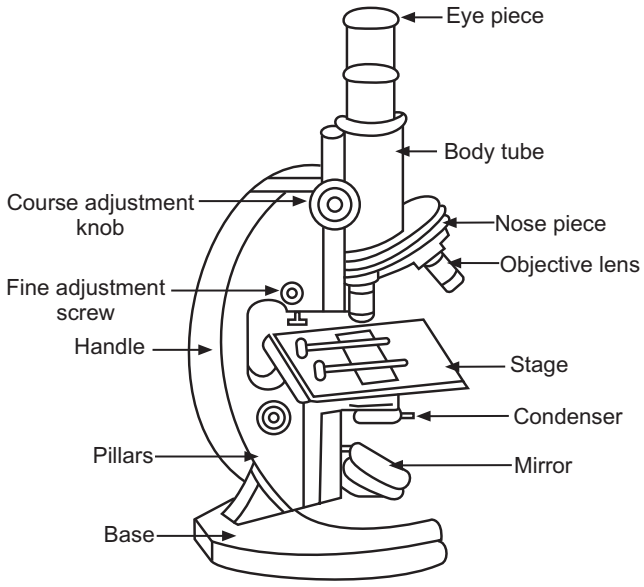

Experiment 1: Study of Compound Microscope
AIM
To study the compound microscope.Requirements
- Compound MicroscopeReferences
1. Human Anatomy and Physiology: A Practical Manual. Havagiray R Chitme, Ajay Kumar Gupta, Anuj Nautiyal. Pharma Med Press, 20232. Study Of Microscope, Practical Human Anatomy And Physiology, S.R.Kale et al., 8th Edition, Dec 2002, pp.2-3
Introduction
A microscope is an optical instrument used to magnify objects or images for detailed examination. The compound microscope was invented in the 1590s by Hans Janssen and Zacharias Janssen. A compound microscope is a high-magnification instrument that uses two lenses to multiply the level of magnification: the objective lens and the eyepiece lens.
Parts of Compound Microscope
Non-optical Parts
- Base: U- or horseshoe-shaped metallic structure supporting the microscope.
- Pillar: Connects the base and the arm.
- Arm (Limb): Metallic handle supporting the stage and body tube.
- Inclination Joint: Allows tilting of the microscope for sitting posture.
- Stage: Metallic platform with a central hole.
- Body Tube: Holds objective and ocular lenses; pathway for light rays.
- Draw Tube: Holds the ocular lens.
- Adjustment Screws: Coarse and fine adjustment for focusing.
Optical Parts
- Diaphragm: Regulates the amount of light; disc and iris types.
- Condenser: Focuses light, adjusted up or down.
- Reflector: Mirror with plane and concave sides for directing light.
- Objective Lenses: Low power, high power, and oil immersion types.
- Ocular Lens: Eyepiece for viewing; magnifications include 5X, 10X, 15X, 20X.

The compound microscope has four systems:
- Support System: Tube, arm, nosepiece, stage, foot.
- Magnification System: Lenses.
- Adjustment System: Coarse/fine adjustment knobs, condenser adjustment, iris diaphragm lever.
- Illumination System: Light source, mirror, condenser.
.png)
Procedure
- Preparation:
- Place the microscope on a stable, flat surface.
- Clean the lenses with lens paper.
- Plug in and turn on the light source.
- Slide Preparation:
- Prepare a slide with the specimen and add a coverslip.
- Initial Setup:
- Start with the lowest power objective lens (e.g., 4x or 10x).
- Place the slide on the stage and secure with clips.
- Position the specimen over the light source.
- Focusing:
- Use coarse focus to bring the specimen into view.
- Use fine focus for a sharp image.
- Observation:
- Adjust light intensity and condenser.
- Systematically scan the specimen.
- Higher Magnification:
- Switch to a higher power objective lens if needed.
- Refocus using fine focus only.
- Adjust light intensity as needed.
- Use the concave mirror for low power; use the plane mirror for high power or oil immersion.
- Cleanup:
- Remove the slide.
- Turn off the light source.
- Clean the lenses and stage.
- Cover the microscope.
.png)
Tips
- Always start with the lowest power objective lens.
- Use lens paper for cleaning.
- Adjust light and condenser for best image.
- Focus carefully to avoid damaging slides.
- Keep both eyes open when observing.
- Handle slides with care and dispose safely.
.png)